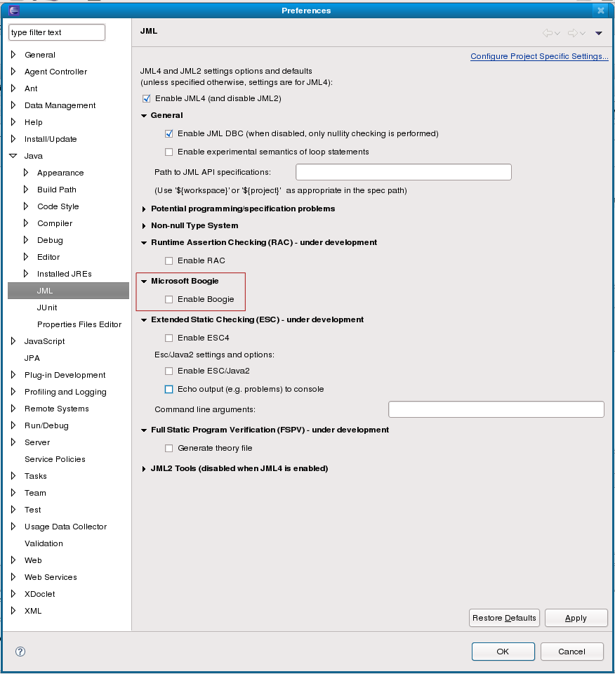
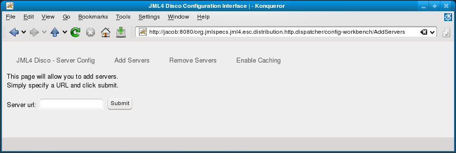
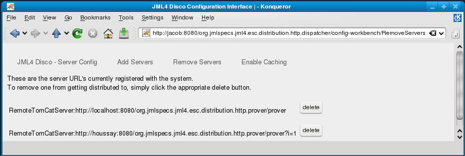
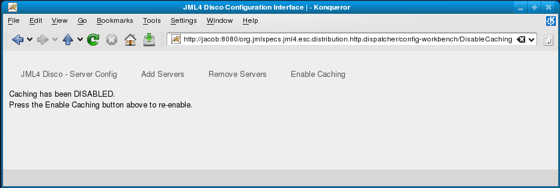
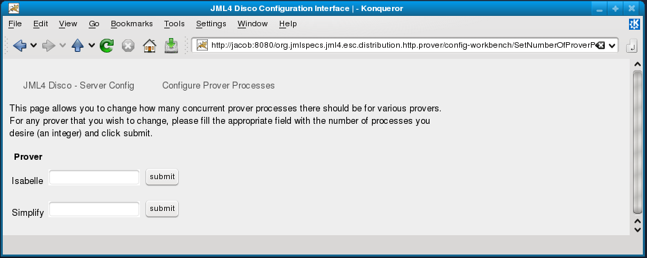

User Interface Design Document
Table of Contents
1. Introduction
1.1 Purpose
The purpose of this document will cover the design and aesthetics of the user interfaces for the JML4Disco Distributed Program Verifier, especially how said changes and implementations relate back to the original Use Cases for the users and administrators.
1.2 User Interfaces
So far, there are three major ways that actors (developers or system administrators) can interact with the system. The first consists of the Client-Side User interface which is an extension of Eclipse UI, meant of developers to quickly configure the behavior of their IDE. The remaining two involve providing system administrators with a way to quickly and efficiently configure any JML4Disco Distributed behavior, such as which servers to use as proving servers(dispatcher) or how many parallel processes to use for each prover (prover server). For ease of access and familiarity, it was chosen that such a UI should behave similarly to Router Web Configuration Management pages.
2. Client Side UI Configuration
The client-side UI changes, as previously mentioned, are meant to mimic the look and feel of the Eclipse IDE, as well as remain constant with the other UI additions that were made for JML4. The changes will be made to the JML preferences dialog in the Eclipse UI (Window>Preferences>Java>JML)
2.1 U.C. 6 and 7: Enabling/Disabling Distributed Program Verification
View Use Cases
The enabling and disabling of Distributed Program Verification will be accounted for by adding a checkbox within the pre-existing "Extended Static Checking(ESC)" dialog. A textbox will be provided in order to allow the developer to specify the URL of the dispatcher to be used. Additionally, the textbox will only become enabled when the checkbox is enabled in keeping with Eclipse conventions. The anticipated result is:

Note: The red box is purely for demonstrative purposes, it will not exist in the actual implementation.
2.2 U.C. 8 and 9: Enabling/Disabling Boogie
View Use Cases
The enabling and disabling of Boogie will, similarly to Distributed Program Verification, be accounted for by adding a checkbox. For possible future extensions for Boogie, the checkbox will exist in a separate composite dialog which will become enabled only when the existing "Enable JML DBC" checkbox in "General" is checked and the "Enable ESC4" and "Enable ESC/Java2" checkboxes in "Extended Static Checking(ESC)" remain unchecked. The anticipated result is:

Note: The red box is purely for demonstrative purposes, it will not exist in the actual implementation.
{kind=link}
3. Server Side UI Configuration: Dispatcher
The server-side configuration is intended for use by System Administrators in order to quickly and easily configure the dispatcher in the Distributed Program Verification prover strategy. In order to seem familiar, it has been chosen that this configuration work similarly to Router Web Configuration Management pages. For navigability, there will be an upper navigation bar which will contain links to the various pages.
3.1 U.C. 12 and 13: Add/Remove Server
View Use Cases
Servers will be added by navigating to an Add Servers page via an upper toolbar link, specifying their URL in a textbox and then clicking submit. They will be removed by navigating to a Remove Servers page via second upper toolbar link and pressing the "Delete" button associated with the appropriate server.
GUI for Add new prover server

{kind=link}
GUI for Remove existing prover server

{kind=link}
3.2 U.C. 15 and 16: Enabling/Disabling Caching
View Use Cases
As there is currently no data necessary to be specified for enabling or disabling caching, both use cases will be represented by a single link on the upper toolbar.
When the link is clicked, the link text will change to reflect the state of caching and the page displayed will present a clear message to the user as to the status of the control.
Enabling Caching Mechanism

Disabling Caching Mechanism

{kind=link}
4. Server Side UI Configuration: Prover Server
This server-side configuration is intended for use by System Administrators in order to quickly and easily configure a single prover server in the Distributed Program Verification prover strategy. Again, in order to seem familiar, it has been chosen that this configuration work similarly to Router Web Configuration Management pages and it will mirror Section 3's UI exactly in look and control scheme (i.e. the upper toolbar).
Prover Configuration GUI

GUI for configuring number of process for each prover

{kind=link}
4.1 U.C. 18: Configure Server Setup - Prover Server
View Use Case
Currently, there is only one modification possible for the provers, and that is the ability to specify the number of concurrent prover processes to use during proving. Like before, this Configure Prover Processes page can be navigated to via the link on the upper toolbar and a textbox and submit button will be provided for each viable prover.